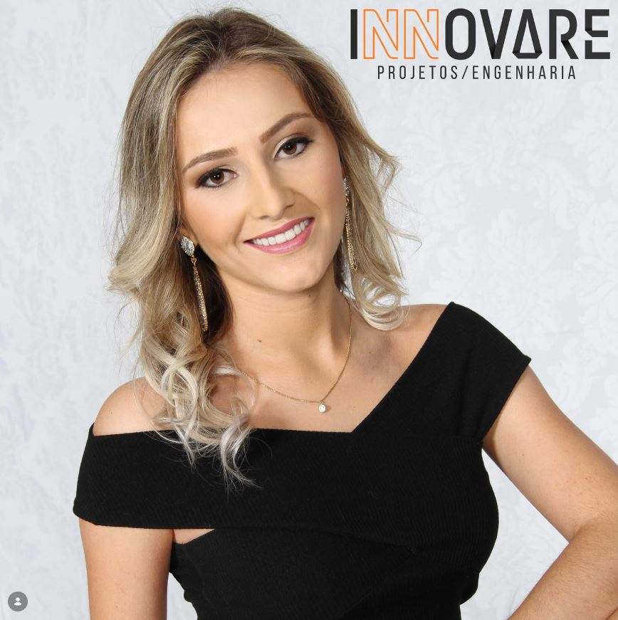

Conheça a Innovare
Experiência técnica e dedicação exclusiva para cada projeto.

A trajetória da Innovare
Sou Juliana Grahl, Engenheira Civil formada pela Universidade para o Desenvolvimento do Alto Vale do Itajaí (UNIDAVI) no ano de 2017 e a profissional responsável por trás de cada projeto que leva a assinatura da Innovare Projetos / Engenharia.
O Nascimento da Innovare (2018)
Logo após a minha formação, percebi a necessidade de criar um espaço onde eu pudesse entregar uma engenharia mais humana, transparente e próxima do cliente. Foi com esse propósito que, em 2018, fundei a Innovare Projetos.
Desde o primeiro dia, a missão do escritório tem sido transformar ideias no papel em obras seguras e viáveis, tratando o sonho de cada cliente com a exclusividade e a responsabilidade técnica que ele exige.
10 Anos de Experiência
Minha jornada na construção civil começou bem antes da fundação do escritório. Atuo no segmento há 10 anos, tendo construído uma forte base técnica com ênfase em orçamentos de estruturas pré-fabricadas de médio e grande porte — área na qual sigo me especializando continuamente.
É exatamente o rigor técnico exigido pelas grandes estruturas que trago para os projetos particulares da Innovare. Atuo diretamente na elaboração de obras residenciais e comerciais, regularizações, reformas, ampliações e no acompanhamento minucioso da execução em campo.
Nosso Compromisso
Esta página é um espaço dedicado a compartilhar com vocês os frutos de um trabalho feito com extremo carinho. Sejam todos bem-vindos à Innovare!
O que nos move
Missão
Transformar projetos em obras seguras e funcionais, entregando excelência técnica e um atendimento próximo e exclusivo para cada cliente, do projeto à execução.
Visão
Ser referência em engenharia civil na região, reconhecida pela precisão, responsabilidade estrutural e por viabilizar sonhos com total transparência e pontualidade.
Valores
- Segurança Estrutural
- Transparência Técnica
- Comprometimento com Prazos
- Atendimento Humanizado
Tire seu projeto do papel com segurança.
Agende uma conversa e vamos entender as necessidades da sua obra.
Fale conosco